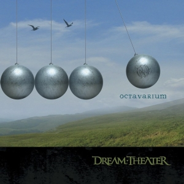
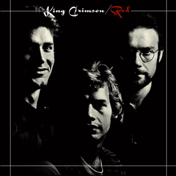

Actualemente estudiante de Jovenes a Programar y Analista de comercio exterior, en un futuro con deseos de trabajar en un empresa que me acepte para poder empezar a forjar mi camino.
Como de momento no poseo experiencia laboral y no tengo las super ganas de hacer curriculum procedere a hacer un top 5 de mis albums favoritos y dare razones de forma resumida del por que lo considero asi, una de mis pasiones del dia a dia es la musica, tanto como aprender la teoria detras de la misma como el escuchar albums de diversos artistas, principlmente del mundo del
Dentro de este puesto se encotrara un album perteneciente ni mas ni menos que de una de mis bandas favoritas, ni mas ni menos que la gran proclamada Dream Theater, banda conocida por crear canciones con una gran complejidad como Dance of Eternity (perteneciente al album de Metropolis pt2) donde los compaces compuestos y complejidades es la definicion de la misma. Sin embargo del disco que hablare en esta ocasion sera un disco que desde que lo escuche por primera supe que se transformaria de mis favoritos. En este caso Hablo del Octavarium, un disco con canciones super destacables como Panic Atack, The Root of all evil y otras. Aun asi la verdadera razon por la que este disco esta aqui, es debido a la cancion final, hablo de octavarium. Una cancion de 24 minutos que logra enfrascar todo lo bueno que puede ofrecer el metal progresivo, sin lugar a dudas de las mejores canciones que escuche en mi vida.
Dentro de este puesto encotramos un disco de una banda mas que reconocida dentro del mundo del rock progresivo, King Crimson, mas especificamente de su album Red, el cual tiene canciones que impregnan la melancolia sin perder un toque oscuro, todas las canciones del disco son buenas. Aun asi la que destaco por sobre las demas es Starless, una cancion que explora tanto la melancolia como la oscuridad, pero a pesar de que esta sea la destacada vale la pena escuchar las 5 canciones del disco sobretodo para los amantes del jazz/rock.
..................................................................................................................................................................Iba a seguir con mi top pero viendo como probablemente esto no le interesa a nadie el siguiente link lo llevara al portafolio real...................................................................................................................................................................................................